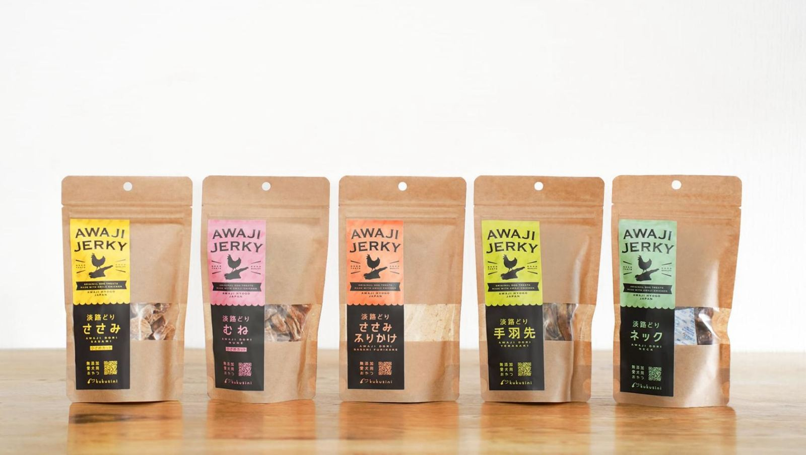
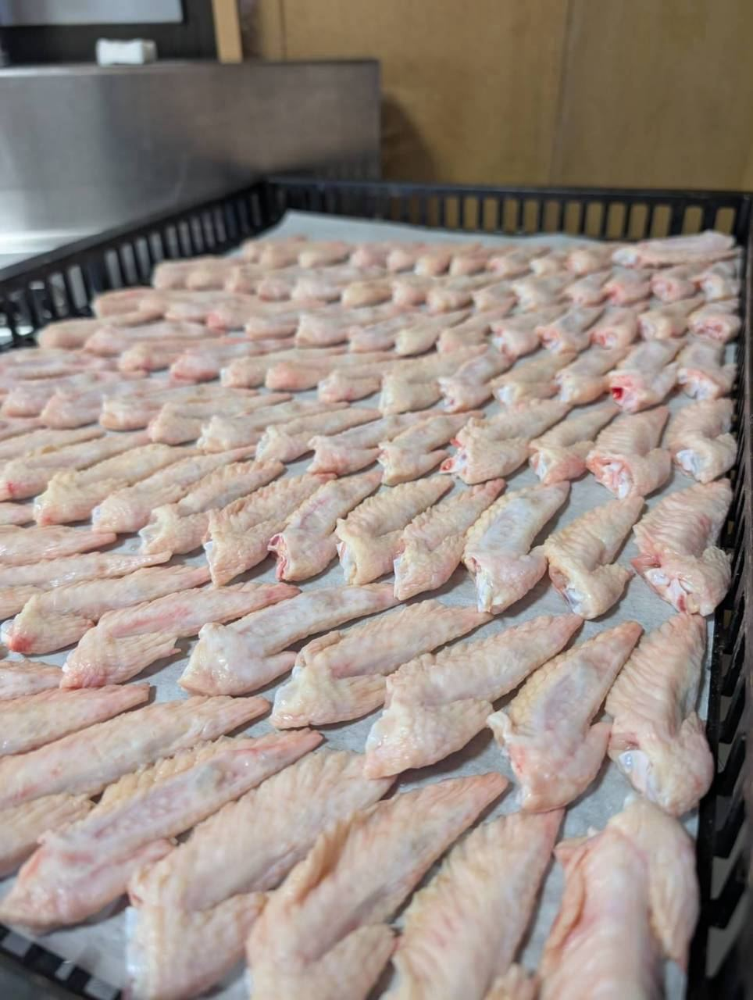

うちの子のために、
素材からつくり方まで。
うちの子に、安心して「おいしいよ」と渡せるものを。淡路どりのジャーキーです。



Our Story
ペットではなく、家族だから。
食べるものに、こだわりを。
うちの子は、ペットではなく家族の一員。だからこそ、毎日口にするものには妥協したくありません。kukusiniは、自分の子どもにもあげられる素材だけで、「食べて豊かになるもの」をつくっています。


処理した鶏肉
一枚ずつ手切り
How to Choose
うちの子に合う、おやつの選び方。


ふりかけの写真（撮影待ち）


Voices
お客さまの声
何も食べられなくなった老犬が、ささみだけは最後まで食べてくれました。ささみ 掲載許可 確認中
腎臓の関係でささみをあげられなくなりましたが、むねなら食べられます。むね 掲載許可 確認中
硬いものをあげたいけれど歯が心配で。砂肝なら安心してあげられます。砂肝 掲載許可 確認中
FAQ
よくある
ご質問
どれから選べばいいですか？
はじめての方には、やわらかくて香りのよい「ささみ」をおすすめしています。
原材料は何ですか？
淡路どりの鶏肉のみです。 表現は確認待ち
骨が入っている商品はありますか？
骨の有無は確認待ち
保存方法と賞味期限は？
確認待ち
与えるときの注意は？
鶏アレルギーのある子には与えないでください。食べている間は目を離さないでください。
送料はいくらですか？
未決